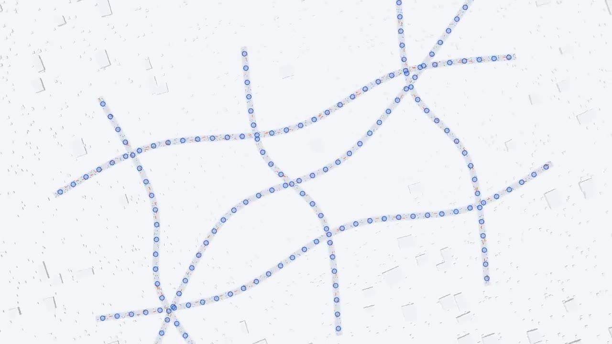
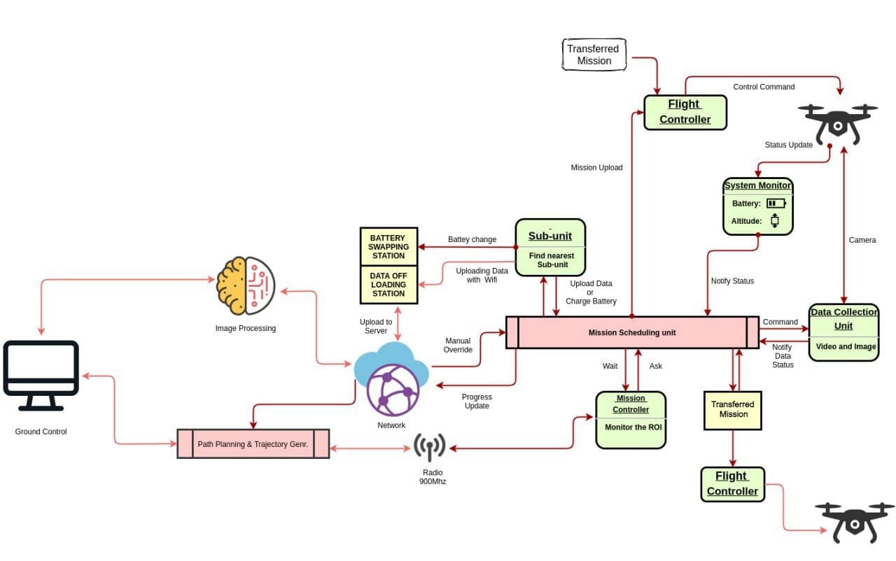

Space robotics · NASA · 2024–2026
Drill Data Analysis for Autonomy
Online anomaly detection for NASA's TRIDENT planetary drill, from field-test logs to ICRA 2026 and fieldwork in Antarctica.
Papers & video →Selected work
Online anomaly detection for NASA's TRIDENT planetary drill, from field-test logs to ICRA 2026 and fieldwork in Antarctica.
Papers & video →
Each edge device learns when to skip, upload, download, or do both, cutting latency, energy and traffic while improving accuracy.
Project page ↗
An autonomous aerial team that detects and safely deters deer from crops, winner of the Excellence in Small Farm Technology Award.
Explore project ↗
Robot localization and mapping using ORB-SLAM3 on Boston Dynamics Spot.
View details →
Underwater robotic manipulation with a UR5 arm, buoyancy, and fluid resistance.
View on GitHub ↗
Recognizing emotions in conversation from brain activity and physiological signals.
View details →
Privacy-aware traffic forecasting across distributed clients using the Flower federated-learning framework.
Explore project ↗
Efficient replanning for a mobile robot navigating a changing environment.
View details →
Autonomous flight, perception, and trajectory planning for aerial robots.
View details →
Interactive cloth mechanics and SPH fluid dynamics with responsive camera controls.
View on GitHub ↗
A responsive articulated creature with animated legs, tail, and environmental interaction.
View on GitHub ↗
Adaptive, collision-free navigation in dense crowds using reinforcement learning and vectorized multi-agent simulation.
Explore VMAS ↗Natural-language robot navigation grounded in visual-semantic understanding.
View on GitHub ↗Procedural leg motion and inverse kinematics rendered interactively on canvas.
View on GitHub ↗